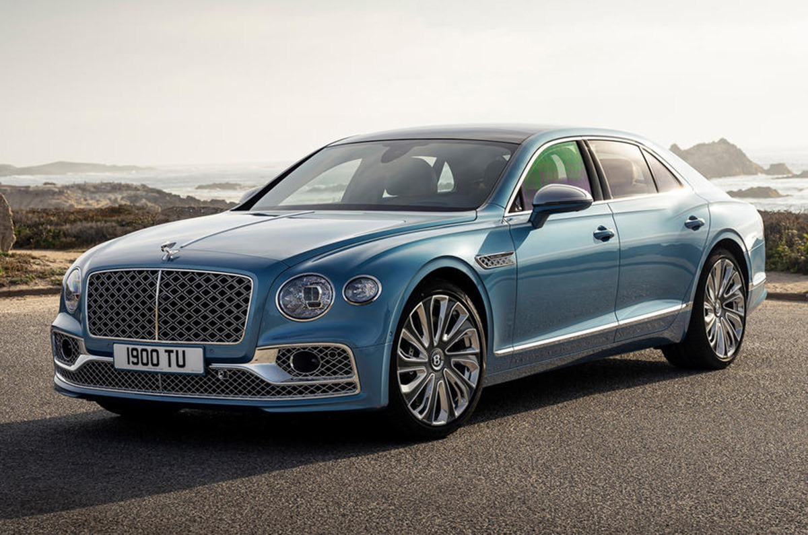

The Bentley Flying Spur Mulliner is the pinnacle of luxury in the Bentley lineup, representing the ultimate in craftsmanship, design, and performance. Mulliner, Bentley's bespoke division, takes the already opulent Flying Spur and enhances it with exclusive features and customizations.
The Bentley Flying Spur Mulliner is the most luxurious and bespoke version of Bentley's already prestigious Flying Spur sedan. Crafted by Mulliner, Bentley's in-house coachbuilding and customization division, the Flying Spur Mulliner represents the pinnacle of luxury, combining exceptional craftsmanship, advanced technology, and unparalleled performance.
Key Features and Details
Design Inspiration
- The name "Haute Voiture" is a play on "Haute Couture," the French term for high fashion, emphasizing the vehicle’s tailor-made nature. The design is inspired by the world of haute couture, with an emphasis on elegance, exclusivity, and intricate detailing.
Exterior
- The Flying Spur Mulliner features unique design elements like Mulliner-specific 22-inch wheels, double diamond-quilted grilles, and exclusive Mulliner badging. The car's exterior can be customized with a wide range of paint colors and finishes.
Interior
- The interior is meticulously crafted with luxurious materials, including quilted leather, diamond-pattern stitching, and intricate wood veneers. The cabin also offers a choice of three exclusive color schemes, along with Mulliner-specific embroidery and illuminated treadplates.
Performance
- It offers a choice of powerful engines, including a V8, a W12, and a hybrid option, delivering impressive performance while maintaining the highest level of comfort.
Technology
- The Flying Spur Mulliner is equipped with advanced technology, including a state-of-the-art infotainment system, a rotating display, and a suite of driver assistance features, ensuring both luxury and convenience.
Customization
- Bentley Mulliner offers extensive customization options, allowing customers to personalize every aspect of their Flying Spur Mulliner. This includes bespoke colors, unique veneers, and even the ability to incorporate personal insignias or family crests into the design.
Target Audience
- The Bentley Flying Spur Mulliner is not just a car; it's a statement of luxury, craftsmanship, and individuality. It's designed for those who desire the ultimate in automotive excellence, offering a combination of performance, comfort, and bespoke luxury that few other vehicles can match.
- The Bentley Flying Spur Mulliner is not just a car; it's a statement of luxury, craftsmanship, and individuality. It's designed for those who desire the ultimate in automotive excellence, offering a combination of performance, comfort, and bespoke luxury that few other vehicles can match.
| Bentley Flying Spur Mulliner |
| Top Speed |
333.13 kmph |
| Engine |
5950 cc |
| Power |
626 bhp |
| Drive Type |
AWD |
| Fuel |
Petrol |
| Gearbox |
8-Speed |
| Petrol Fuel Tank Capacity |
90 Litres |
| Max Power |
626bhp@5000-6000rpm |
| Max Torque |
900Nm@1350-4500rpm |
| Ground Clearance Unladen |
110 mm |